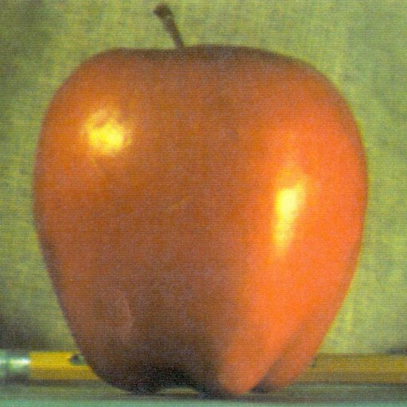

CSC 476/676 AU / Homework 3 / Image Blending Using Pyramids
1. (5pts) Plot both continuous and discrete signals of the function
For this question, I fristly set up a sample list x which contains the x axis coordinate I want to sample bewteen 0-50. Subsequently, I calculate the x with equation and store the result in y variable and discrete_data variable which are also lists. Then, I use 'plt.plot(x,y) to plot the signal' and 'plt.stem(x,discrete_data)' to plot the stem.
Results

Fig 1. Answer for Question 1
2. (5pts) Consider a complex-valued signal. Can you plot the real and imaginary part Of the function when t have a range of (-0.02, 0.05)?

Fig 2.Equation for Q2
For this question, I fristly set up list t which contains 100 samples of the x axis coordinate I want to sample bewteen -0.02 - 0.05. Afterward, I calculate the t with equation and store the result in x. Final, I use 'x.real' to extra the real part in equation and 'plt.plot(t,x.real)' to plot the real part signal. Same as last step, I extra image part by 'x.imag' and use 'plt.plot(t,x.imag)' to plot the image part signal.
Results

Fig 3. Answer for Question 2
3. (5pts) In this exercise, we want to generate the same plot as Slide No. 20 in the lecture9 slides (Figure 1.20 in Chapter SignalProcessing.pdf). Figure see below.

Fig 4.Example for Q3
For how the code work, I have added comments next to each code, please refer to it. For this part, we can observe that even the signal be translated or flipped the magnitude is still the same.
| Original signal | F[n] | |F[n]| |
|---|---|---|

|

|

|
| Translated signal | F[n] | |F[n]| |
|---|---|---|
|
|
|
|
| Flipped signal | F[n] | |F[n]| |
|---|---|---|

|

|

|
Fig 5.result for Q3
4. (5pts) Plot the Fourier transform of the following function for frequency below 50hz, using the numpy.fft

Fig 6.Equation for Q4
In this answer, I used np.fft.fftfreq to set up the samples' frequency. Then I extra the single which frequency below 50HZ. The red line represents real part of fft and the green line represents the image part.

Fig 6.Result for Q4
5. (5pts) Create the following 2D sine wave grating patterns as images and show their 2D Fourier transforms of the three images. You must plot both thee input images in real domain and the Fourier domain.

Fig 7.Example for Q5
Follow the equation on textbook and translated the sine wave by "np.fft.fft", we got the results shown below. You can observe that the coordinate of dft is related to the question's [u,v].

Fig 8.Results for Question 5
6. (25pts) Pyramid Blending: Write a program that takes an input two color images and a binary mask images and produces the Laplacian pyramid blend of the two images.
As you can see, the first two of my results are merged and the last one is not. The reasons why two image can't merge seamless are:



|

|

|
Fig 9.result for Q6 (From left to right is: img1, img2, mask and blended image)